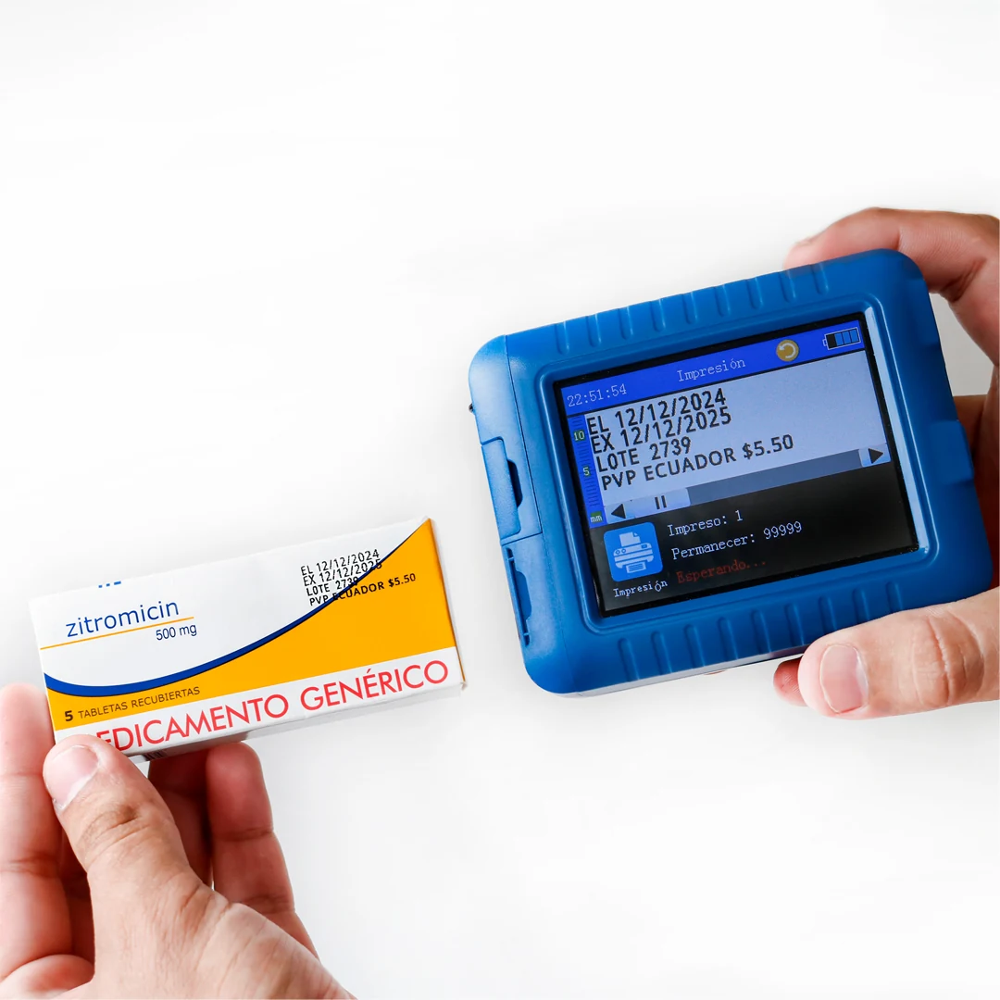
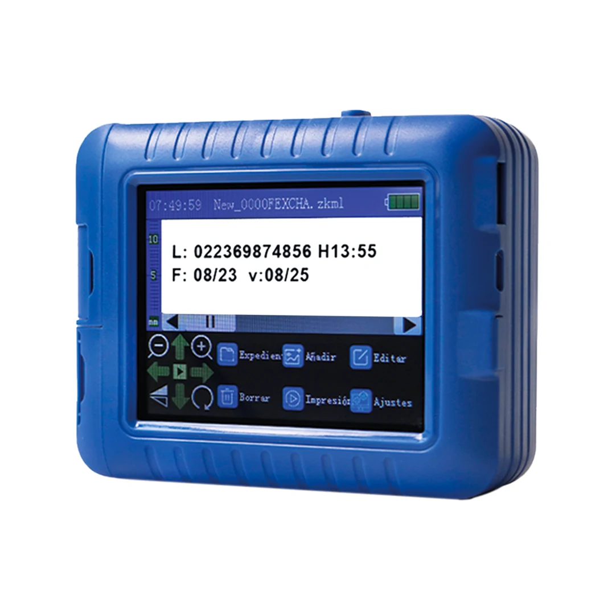

M1 / PRODUCCIÓN
Fechas y lotes con M1: del primer mensaje a una impresión consistente
Una fecha legible comienza antes de tocar la pantalla. El contenido, la zona del empaque y la forma de operar deben trabajar juntos para que cada impresión identifique correctamente tu producto.

Define qué dato identifica a tu producto
La M1 permite llevar el mensaje hasta el empaque: se configura en la pantalla táctil y se desplaza manualmente sobre la superficie. Esa flexibilidad resulta útil cuando trabajas con distintas presentaciones o cambias de estación. Para aprovecharla, conviene comenzar con una ficha de impresión por producto, en lugar de modificar textos de memoria durante la jornada.
Separa los datos fijos —por ejemplo, una referencia interna— de los variables, como fecha y lote. Define quién autoriza esos valores y de dónde se obtienen. La codificadora reproduce la información configurada; la fecha de vencimiento y la asignación del lote deben proceder del proceso de calidad de tu empresa.
| Dato | Decisión antes de imprimir |
|---|---|
| Fecha | Formato, significado y valor autorizado para la producción. |
| Lote | Identificador que permita relacionar el empaque con el registro de producción. |
| Texto fijo | Abreviaturas claras y una plantilla aprobada por presentación. |
| Código de barras o QR | Contenido, tamaño y lector con el que se validará la aplicación. |
Diseña para el espacio real del empaque
La M1 tiene pantalla táctil de 3.5 pulgadas y altura de impresión de 12.7 mm. Esta altura ayuda a dimensionar el mensaje, pero no sustituye la medición del área útil: una tapa, un frasco y una caja ofrecen apoyos y recorridos diferentes. Mide una zona continua, sin pliegues, sellos ni cambios bruscos de nivel.
Prioriza la lectura. Un mensaje corto, con suficiente separación entre líneas y etiquetas comprensibles, suele ser más fácil de inspeccionar que uno saturado. Si necesitas incluir texto y un código, prepara ambos en el tamaño final y revisa el resultado físico; una vista en pantalla no reproduce el contraste ni la textura del material.

Prepara una operación manual repetible
La consistencia depende también del puesto de trabajo. Apoya el empaque para que no gire ni se desplace durante la pasada y deja espacio para iniciar y terminar el recorrido. En superficies curvas, la estabilidad del apoyo y la zona elegida adquieren especial importancia. Evita improvisar la posición con cada unidad.
Instala el S70 conforme a las instrucciones del equipo y del cartucho. Realiza una prueba sobre el mismo material y acabado que utilizarás en producción. Mantén un movimiento controlado durante la pasada y comprueba que el mensaje conserve proporciones, alineación y separación. No asumas que la velocidad de una persona será idéntica a la de otra: incorpora una muestra aprobada al puesto.
Aprueba la primera muestra y controla los cambios
Antes de procesar el lote completo, contrasta la impresión con la orden de producción. Lee cada carácter: una fecha bien impresa puede seguir siendo incorrecta si el valor configurado no corresponde al producto. Revisa también que el mensaje quede en la zona prevista y no invada otros datos del empaque.
Comprueba la impresión después del tiempo de secado apropiado para la aplicación y tras la manipulación normal del producto. Documenta el material probado, la plantilla, el lote del consumible y el resultado. Repite la revisión al cambiar de presentación, material, mensaje u operador, y durante la jornada según tu plan de control.
- Contenido correcto: fecha, lote y referencia coinciden con la orden.
- Impresión completa: sin caracteres cortados, dobles o ausentes.
- Zona estable: ubicación y orientación fáciles de revisar.
- Resistencia adecuada: el código permanece legible en la manipulación prevista.
Si imprimes códigos, comprueba también su lectura
Un código de barras o QR necesita más que una apariencia nítida. Comprueba el contenido leído, el contraste y el espacio libre alrededor del símbolo. No lo coloques junto a bordes, pliegues o gráficos que invadan esa zona. El tamaño debe corresponder al tipo de código y al entorno donde será leído.
Escanear una muestra ayuda a detectar errores operativos. La verificación de calidad es un proceso adicional: utiliza un verificador apropiado para evaluar el símbolo de forma objetiva. GS1 distingue entre leer un código y medir su calidad. Si tu cliente exige un resultado de verificación, inclúyelo desde la evaluación de la aplicación.
Consulta técnica: GS1: calidad de impresión de códigos · GS1: cómo medir la calidad.
Qué enviar a Rigel para revisar tu mensaje
Comparte una fotografía del producto completo, un acercamiento de la zona de impresión y el mensaje exacto que deseas reproducir. Añade las dimensiones disponibles, el material y la cantidad aproximada de unidades por jornada. Con estos datos, el equipo de México puede revisar contigo la combinación M1 + S70 y preparar una prueba representativa.
Preguntas frecuentes
¿Puedo usar la misma plantilla en todos mis productos?
Solo si el contenido, el espacio disponible y las condiciones de impresión son equivalentes. Define una plantilla aprobada para cada presentación cuando cambie alguno de estos elementos.
¿La M1 asigna el lote de mi producción?
El lote debe definirse en tu proceso de producción. Configura en el equipo el identificador autorizado y contrástalo con el registro correspondiente.
Hablemos de tu aplicación
Comparte tu material y el mensaje que necesitas imprimir con nuestro equipo en México.
Contactar a Rigel